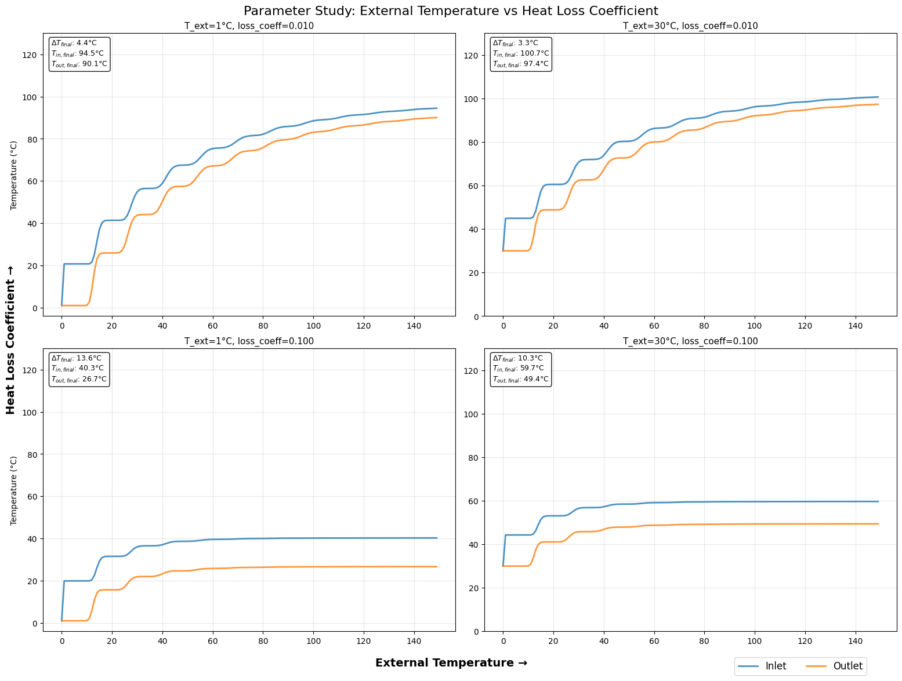

Simulation#

import matplotlib.pyplot as plt
import matplotlib.animation as animation
from matplotlib.colors import Normalize
import numpy as np
def propagate_pipe(pipe_temperature: list[float]):
T_end = pipe_temperature.pop(-1) # Remove the last element
pipe_temperature.insert(0, T_end) # Insert it at the beginning
def update_pipe(pipe_temperature, loss_coeff, T_ext, T_heater, heat_coeff):
N = len(pipe_temperature)
new_temperatures = pipe_temperature.copy()
for i in range(1, N - 1):
new_temperatures[i] = (
pipe_temperature[i - 1]
+ pipe_temperature[i]
+ loss_coeff * T_ext
) / (2.0 + loss_coeff)
# Update the heater end
new_temperatures[0] = (heat_coeff * T_heater + pipe_temperature[0]) / (
heat_coeff + 1
)
return new_temperatures
def create_gif_animation(save_as_gif=True, filename="pipe_simulation.gif"):
"""
Create animation from your original code and optionally save as GIF
"""
# Default parameters from your original code
T_ext = 7
N = 20
T_heater = 120
t_max = 150
loss_coeff = 2e-2
heat_coeff = 0.5
pipe_temperature = [T_ext] * N
# Setup for plotting
fig, (ax1, ax2) = plt.subplots(2, 1, figsize=(10, 8))
# First subplot: Pipe temperature visualization
bar_container = ax1.bar(
range(len(pipe_temperature)), pipe_temperature, color="blue"
)
ax1.set_ylim(0, 100)
ax1.set_title("Pipe Temperature Distribution")
ax1.set_xlabel("Pipe Element")
ax1.set_ylabel("Temperature (°C)")
# Normalization for color mapping
norm = Normalize(vmin=T_ext, vmax=100)
# Second subplot: Temperature at both ends over time
times = []
T_start_history = []
T_end_history = []
(line_start,) = ax2.plot([], [], linewidth=2, label="$T_{inlet}$")
(line_end,) = ax2.plot([], [], linewidth=2, label="$T_{outlet}$")
ax2.set_xlim(0, t_max)
ax2.set_ylim(T_ext - 5, 100)
ax2.set_title("Temperature at Pipe Ends Over Time")
ax2.set_xlabel("Time Step")
ax2.set_ylabel("Temperature (°C)")
ax2.grid()
ax2.legend()
def init():
# Initialize the bar colors
for bar, temp in zip(bar_container, pipe_temperature):
bar.set_color(plt.cm.jet(norm(temp)))
line_start.set_data([], [])
line_end.set_data([], [])
return list(bar_container) + [line_start, line_end]
def animate(t):
nonlocal pipe_temperature, times, T_start_history, T_end_history
# Update the pipe temperature
pipe_temperature = update_pipe(
pipe_temperature, loss_coeff, T_ext, T_heater, heat_coeff
)
propagate_pipe(pipe_temperature)
# Update bar heights and colors
for bar, temp in zip(bar_container, pipe_temperature):
bar.set_height(temp)
bar.set_color(plt.cm.jet(norm(temp)))
# Record temperatures at both ends
T_start = pipe_temperature[2]
T_end = pipe_temperature[0]
times.append(t)
T_start_history.append(T_start)
T_end_history.append(T_end)
# Update the line plots
line_start.set_data(times, T_start_history)
line_end.set_data(times, T_end_history)
# Adjust the x-axis if necessary
if t >= ax2.get_xlim()[1]:
ax2.set_xlim(0, t + t_max * 0.1)
return list(bar_container) + [line_start, line_end]
ani = animation.FuncAnimation(
fig,
animate,
frames=t_max,
init_func=init,
blit=False,
interval=100,
repeat=False,
)
plt.tight_layout()
if save_as_gif:
print(f"Saving animation as {filename}...")
ani.save(filename, writer='pillow', fps=10, dpi=80)
print(f"✅ GIF saved as {filename}")
plt.show()
return ani
def run_single_simulation(N, T_ext, T_heater, t_max, loss_coeff, heat_coeff):
"""Run a single simulation and return final results"""
pipe_temperature = [T_ext] * N
# Storage for time series
times = []
T_start_history = []
T_end_history = []
for t in range(t_max):
# Update the pipe temperature
pipe_temperature = update_pipe(
pipe_temperature, loss_coeff, T_ext, T_heater, heat_coeff
)
propagate_pipe(pipe_temperature)
# Record temperatures
T_start = pipe_temperature[2] if len(pipe_temperature) > 2 else pipe_temperature[0]
T_end = pipe_temperature[0]
times.append(t)
T_start_history.append(T_start)
T_end_history.append(T_end)
return {
'times': times,
'T_start_history': T_start_history,
'T_end_history': T_end_history,
'final_pipe_temp': pipe_temperature,
'steady_state_inlet': T_start_history[-1],
'steady_state_outlet': T_end_history[-1],
'temperature_difference': T_start_history[-1] - T_end_history[-1]
}
def create_parameter_comparison():
"""
Create 4x4 comparison plot varying external temperature and heat loss coefficient
"""
# Parameter ranges
T_ext_values = [1, 30] # External temperatures
loss_coeff_values = [0.01,0.1] # Heat loss coefficients
# Fixed parameters
N = 20
T_heater = 120
t_max = 150
heat_coeff = 0.5
# Create the 4x4 plot
fig, axes = plt.subplots(2, 2, figsize=(16, 12))
fig.suptitle('Parameter Study: External Temperature vs Heat Loss Coefficient',
fontsize=16, y=0.98)
# Store results for summary
results_summary = []
for i, loss_coeff in enumerate(loss_coeff_values):
for j, T_ext in enumerate(T_ext_values):
ax = axes[i, j]
# Run simulation
results = run_single_simulation(N, T_ext, T_heater, t_max, loss_coeff, heat_coeff)
# Plot time series
ax.plot(results['times'], results['T_start_history'],
linewidth=2, alpha=0.8, label='Inlet' if i==0 and j==0 else "")
ax.plot(results['times'], results['T_end_history'],
linewidth=2, alpha=0.8, label='Outlet' if i==0 and j==0 else "")
# Formatting
ax.set_title(f'T_ext={T_ext}°C, loss_coeff={loss_coeff:.3f}', fontsize=11)
ax.grid(True, alpha=0.3)
ax.set_ylim(min(T_ext - 5, 0), T_heater + 10)
# Labels only on edges
if i == 3: # Bottom row
ax.set_xlabel('Time Step')
if j == 0: # Left column
ax.set_ylabel('Temperature (°C)')
# Add steady-state info
final_diff = results['temperature_difference']
steady_inlet = results['steady_state_inlet']
steady_outlet = results['steady_state_outlet']
str = '$ΔT_{final}$'
str_in= '$T_{in,final}$'
str_out = '$T_{out,final}$'
info_text = f'{str}: {final_diff:.1f}°C\n{str_in}: {steady_inlet:.1f}°C\n{str_out}: {steady_outlet:.1f}°C'
ax.text(0.02, 0.98, info_text, transform=ax.transAxes,
verticalalignment='top', fontsize=9,
bbox=dict(boxstyle="round,pad=0.3", facecolor="white", alpha=0.9))
# Store for summary
results_summary.append({
'T_ext': T_ext,
'loss_coeff': loss_coeff,
'temperature_difference': final_diff,
'steady_inlet': steady_inlet,
'steady_outlet': steady_outlet
})
# Add overall legend
handles, labels = axes[0, 0].get_legend_handles_labels()
if handles: # Only if we have legend items
fig.legend(handles, labels, loc='lower left', bbox_to_anchor=(0.8, 0.01),
ncol=2, fontsize=12)
# Add parameter labels on the sides
fig.text(0.02, 0.5, 'Heat Loss Coefficient →', rotation=90,
verticalalignment='center', fontsize=14, weight='bold')
fig.text(0.5, 0.03, 'External Temperature →', horizontalalignment='center',
fontsize=14, weight='bold')
plt.tight_layout()
plt.subplots_adjust(top=0.94, bottom=0.08, left=0.06, right=0.98)
plt.savefig('param_comparison.pdf')
plt.show()
return results_summary
def create_summary_heatmap(results_summary=None):
"""
Create heatmaps showing the effect of parameters on key metrics
"""
if results_summary is None:
# Run the comparison to get data
print("Running parameter comparison to generate data...")
results_summary = create_parameter_comparison()
# Convert to arrays for heatmap
T_ext_values = [1, 10, 100] # External temperatures
loss_coeff_values = [0.005,0.1, 1.0] # Heat loss coefficients
# Initialize arrays
temp_diff_matrix = np.zeros((3, 3))
inlet_temp_matrix = np.zeros((3, 3))
outlet_temp_matrix = np.zeros((3, 3))
# Fill matrices
for result in results_summary:
i = loss_coeff_values.index(result['loss_coeff'])
j = T_ext_values.index(result['T_ext'])
temp_diff_matrix[i, j] = result['temperature_difference']
inlet_temp_matrix[i, j] = result['steady_inlet']
outlet_temp_matrix[i, j] = result['steady_outlet']
# Create heatmap plots
fig, (ax1, ax2, ax3) = plt.subplots(1, 3, figsize=(18, 5))
# Temperature difference heatmap
im1 = ax1.imshow(temp_diff_matrix, cmap='RdYlBu_r', aspect='auto')
ax1.set_title('Steady-State Temperature Difference (°C)')
ax1.set_xlabel('External Temperature (°C)')
ax1.set_ylabel('Heat Loss Coefficient')
ax1.set_xticks(range(3))
ax1.set_xticklabels(T_ext_values)
ax1.set_yticks(range(3))
ax1.set_yticklabels([f'{x:.3f}' for x in loss_coeff_values])
# Add text annotations
for i in range(3):
for j in range(3):
ax1.text(j, i, f'{temp_diff_matrix[i, j]:.1f}',
ha='center', va='center', color='white', weight='bold')
plt.colorbar(im1, ax=ax1, shrink=0.8)
# Inlet temperature heatmap
im2 = ax2.imshow(inlet_temp_matrix, cmap='Reds', aspect='auto')
ax2.set_title('Steady-State Inlet Temperature (°C)')
ax2.set_xlabel('External Temperature (°C)')
ax2.set_ylabel('Heat Loss Coefficient')
ax2.set_xticks(range(3))
ax2.set_xticklabels(T_ext_values)
ax2.set_yticks(range(3))
ax2.set_yticklabels([f'{x:.3f}' for x in loss_coeff_values])
for i in range(3):
for j in range(3):
ax2.text(j, i, f'{inlet_temp_matrix[i, j]:.0f}',
ha='center', va='center', color='white', weight='bold')
plt.colorbar(im2, ax=ax2, shrink=0.8)
# Outlet temperature heatmap
im3 = ax3.imshow(outlet_temp_matrix, cmap='Blues', aspect='auto')
ax3.set_title('Steady-State Outlet Temperature (°C)')
ax3.set_xlabel('External Temperature (°C)')
ax3.set_ylabel('Heat Loss Coefficient')
ax3.set_xticks(range(3))
ax3.set_xticklabels(T_ext_values)
ax3.set_yticks(range(3))
ax3.set_yticklabels([f'{x:.3f}' for x in loss_coeff_values])
for i in range(3):
for j in range(3):
ax3.text(j, i, f'{outlet_temp_matrix[i, j]:.0f}',
ha='center', va='center', color='white', weight='bold')
plt.colorbar(im3, ax=ax3, shrink=0.8)
plt.tight_layout()
plt.show()
def main_demo():
"""
Main demonstration function showing both parts
"""
print("🔥 Pipe Temperature Simulation - Two-Part Analysis")
print("=" * 60)
print()
print("Part 1: Creating GIF animation from original code...")
print("(This will take a moment to generate)")
# Create GIF
create_gif_animation(save_as_gif=True, filename="pipe_simulation.gif")
print()
print("Part 2: Creating 4x4 parameter comparison...")
print("Varying external temperature (0-25°C) and heat loss coefficient (0.005-0.1)")
# Create comparison plot
results = create_parameter_comparison()
print()
print("Part 3: Creating summary heatmaps...")
create_summary_heatmap(results)
print()
print("✅ Complete! You now have:")
print(" - pipe_simulation.gif (animated visualization)")
print(" - 4x4 parameter comparison plot")
print(" - Summary heatmaps")
if __name__ == "__main__":
print("Run these functions in your Jupyter Book:")
print()
print("# For GIF generation:")
print("create_gif_animation(save_as_gif=True)")
print()
print("# For parameter comparison:")
print("create_parameter_comparison()")
print()
print("# For complete demo:")
print("main_demo()")
# create_gif_animation(save_as_gif=True)
results = create_parameter_comparison()
create_summary_heatmap(results)
Run these functions in your Jupyter Book:
# For GIF generation:
create_gif_animation(save_as_gif=True)
# For parameter comparison:
create_parameter_comparison()
# For complete demo:
main_demo()

---------------------------------------------------------------------------
ValueError Traceback (most recent call last)
Cell In[17], line 383
380 # create_gif_animation(save_as_gif=True)
381 results = create_parameter_comparison()
--> 383 create_summary_heatmap(results)
Cell In[17], line 273, in create_summary_heatmap(results_summary)
271 # Fill matrices
272 for result in results_summary:
--> 273 i = loss_coeff_values.index(result['loss_coeff'])
274 j = T_ext_values.index(result['T_ext'])
275 temp_diff_matrix[i, j] = result['temperature_difference']
ValueError: 0.01 is not in list